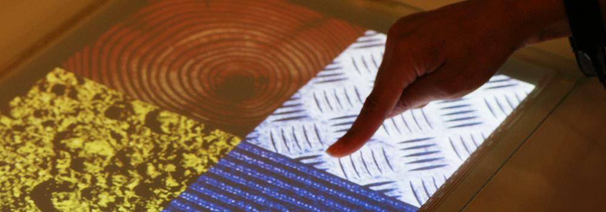
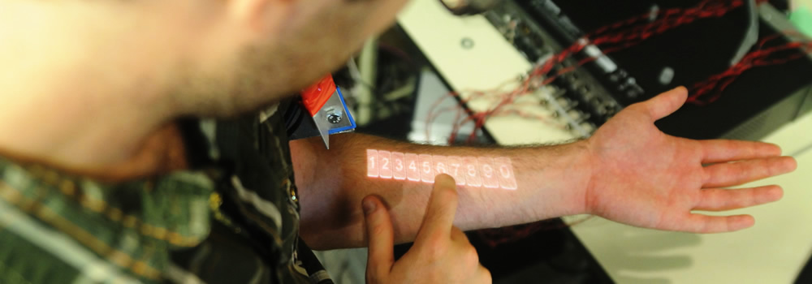

Newell-Simon Hall
Newell Simon Hall houses offices, meeting facilities, and project labs for faculty and staff in the Human-Computer Interaction Institute.

Tesla Touch
TeslaTouch infuses finger-driven interfaces with physical feedback. The technology is based on the electrovibration principle.

Skinput
Skinput is a technology that appropriates the human body for acoustic transmission, allowing the skin to be used as a finger input surface.